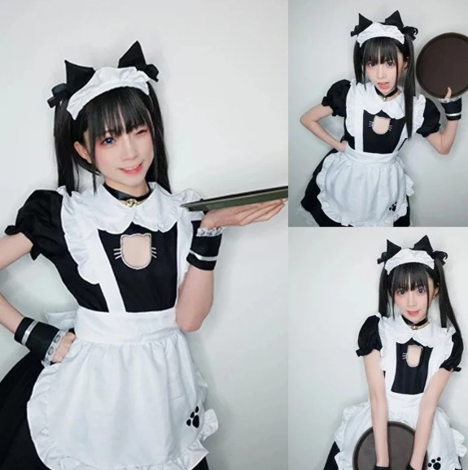

Добро пожаловать в Котокафе "Лапка"
 Наши котики
Наши котики


Что интересного вы у нас найдете
Ассортимент, декор и персонал
Декор
Наше кафе состоит из двух зон, украшенных кошачьими элементами. Первая зона — само кафе, а вторая игровая, в которой вы можете провести время с нашими котиками.

Напитки и десерты
В нашем кафе большой выбор горячих и холодных напитков. А также большой выбор десертов в кошачьей тематике.

Наш персонал
В кафе вас встретят прекрасные кошко-девушки. На протяжении всего вашего присутствия они будут сопровождать и радовать вас.
Наши котики
Марципан
Это элегантный и изысканный котик с очаровательной внешностью. Он очень культурный и скромный, любит играть с солнечными зайчиками и плюшевыми мышками. А его любимое лакомство — лосось.
Никки
Это гордая и независимая кошечка. Она любит лежать на коленках у гостей и нежиться на солнышке. Если вы захотите ее угостить, то знайте, ее любимое блюдо — куриная грудка.

Муро
Это очень ласковый котик. Он любит спать на подоконнике, греясь на солнышке. Муро нравится, когда его гладят или чешут ему животик. При желании можете покормить его креветками.
Клео
Это очень озорная сиамская принцесса. Она очень умная кошка, которая любит играть с лазерной указкой и гладиться об ноги посетителей. А угостить ее вы можете сливочным сыром.
Феликс
Это важный джентльмен, любящий через окно наблюдать за птицами и играть с удочкой-дразнилкой. Он с радостью полежит у вас на коленях и погладится об все ваше тело. А если вы покормите его паштетом из креветок, он будет счастлив.
Марго
Очаровательная, но горделивая кошка, которая никогда сама не попросит ласки. Однако она будет рада полежать у вас на коленях. Особенно, если вы угостите ее паштетом из индейки.
Миша
На первый взгляд это очень грозный и ворчливый кот. Но на самом деле он один из самых дружелюбных котов нашего заведения, который всегда рад провести с вами время. А чтобы заполучить его доверие угостите его тунцом.